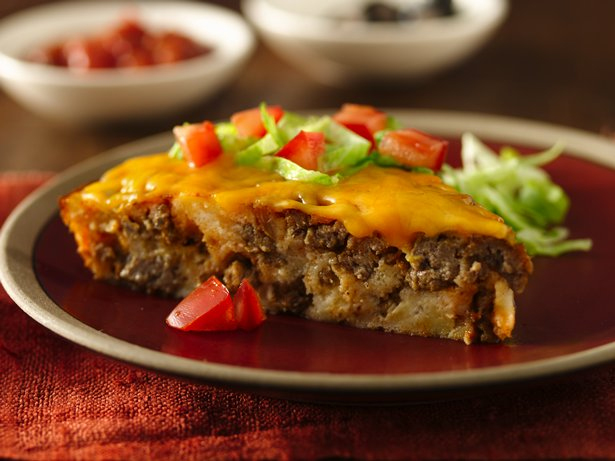

Gluten Free Impossibly Easy Taco Pie

Enjoy this impossibly easy taco pie recipe made using Old El Paso® taco seasoning mix and Old El Paso® chopped green chiles that are ready in just 50 minutes – perfect for a dinner.
Ingredients
- 1 lb lean (at least 80%) ground beef
- 1 medium onion, chopped (1/2 cup)
- 1 package (1 oz) Old El Paso® taco seasoning mix
- 1 can (4.5 oz) Old El Paso® chopped green chiles, drained
- 2 eggs
- 1 cup milk
- 1/2 cup Bisquick® Gluten Free mix
- 3/4 cup shredded Monterey Jack or Cheddar cheese (3 oz)
- 3/4 cup chopped tomato
- 1 1/2 cups shredded lettuce, if desired
- Salsa, if desired
- Sour cream, if desired
Steps
- Heat oven to 400°F. Spray 9-inch glass pie plate with cooking spray. In 10-inch skillet, cook beef and onion over medium heat, stirring occasionally, until beef is brown; drain. Stir in seasoning mix. Spoon into pie plate. Top with chiles.
- In small bowl, stir eggs, milk and Bisquick mix until blended. Pour into pie plate.
- Bake about 25 minutes. Top with cheese and tomato; bake 2 to 3 minutes longer or until cheese is melted. Let stand 5 minutes before serving. Serve with lettuce, salsa and sour cream.